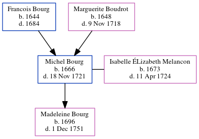

Michel Bourg 1666 - 1721
[ Home ] | [ Calendar ] | [ Surnames Index ] | [ Census Index ] | [ Family History ]The child of Francois Bourg and Marguerite Boudrot, Michel Bourg, the 8 times great-grandfather of Michele Copp (née Phillips), was born in Port Royal, Acadia, Nova Scotia, Canada in 16661,2,3 and married Isabelle ÉLizabeth Melancon (with whom he had 1 child, Madeleine) in CA in 16894.
He died on Nov 18, 1721 in , , New Brunswick, Canada.
Parents
- Francois was born in 1644
- Marguerite was born in 1648
Children
- Madeleine was born in 1696
Citations
- Family Data Collection - Births Online publication - Provo, UT, USA: The Generations Network, Inc., 2001.
- Family Data Collection - Individual Records Online publication - Provo, UT, USA: The Generations Network, Inc., 2000.
- U.S. and International Marriage Records, 1560-1900 Online publication - Provo, UT, USA: The Generations Network, Inc., 2004.Original data - This unique collection of records was extracted from a variety of sources including family group sheets and electronic databases. Originally, the information was deriv
- U.S. and International Marriage Records, 1560-1900 Online publication - Provo, UT, USA: The Generations Network, Inc., 2004.Original data - This unique collection of records was extracted from a variety of sources including family group sheets and electronic databases. Originally, the information was deriv
Family Tree
Generated by ged2site. Last updated on Jun 6, 2024